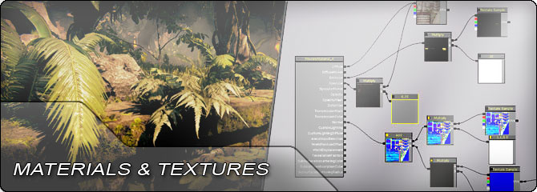

UDN
Search public documentation:
MaterialsAndTexturesHome
日本語訳
中国翻译
한국어
Interested in the Unreal Engine?
Visit the Unreal Technology site.
Looking for jobs and company info?
Check out the Epic games site.
Questions about support via UDN?
Contact the UDN Staff
中国翻译
한국어
Interested in the Unreal Engine?
Visit the Unreal Technology site.
Looking for jobs and company info?
Check out the Epic games site.
Questions about support via UDN?
Contact the UDN Staff
UE3 Home > Materials & Textures
Materials & Textures

Materials and the textures used within them determine the appearance of surfaces within the world. They control not only the color of the surfaces, but also how each surface interacts with light by applying a chosen lighting model and blending mode. The lighting model determines how the light interacts with the surface and the blending mode controls how the surface being rendered blends with the rest of the scene.
Material
- Material Editor User Guide - Overview of the node-based Material Editor in UE3.
- Material Instance Editor User Guide - Overview of the editor for Material Instances in UE3.
- Materials Overview - Descriptions of Material inputs and properties.
- Instanced Materials - Overview of the material instancing system in UE3.
- Material Instance Constant - Guide to using parameterized materials instances.
- Material Instance Time Varying - Guide to using time-varying material instances.
- Lit Translucency - Overview of using statically-lit translucency.
- Mobile Material Reference - Information about creating materials for mobile devices.
- Materials Tutorial - Guide to creating simple materials.
- Materials Compendium - Descriptions of all expressions nodes available in the materials system.
- Material Examples - Tips, tricks, and techniques for creating different types of materials.
- Material Basics - Introduction to basic materials.
- Material Functions - Explanation of material functions.
- Custom Lighting - How to use the custom lighting model.
- Anisotropic Lighting - How to use the anisotropic lighting model.
- Soft Masked - Overview of the soft-masked blending mode.
- DepthBiasBlend Usage - Guide to using the DepthBiasBlend expression.
- Creating Hair Using Alpha - Creating hair using materials and meshes in UE3.
- Fake Mesh Lighting - How to fake lighting on meshes and particles using materials.
- World Position Offset - How to use the WorldPositionOffset material input.
- Material Masks - Creating masks and gradients algorithmically using material expressions.
- Image Based Reflections - Rendering whole-scene, HDR reflections.
- Screen Space Subsurface Scattering - SSS material effect for realistic human skin.
- Tessellation - Generate more triangles from a mesh for smoother surfaces including silhouettes.
- Creating Distorted Reflections - How to create materials that reflect the scene.
- Dynamic Normal Maps - Generating a normal map from a height map within a material.
- Parallax Occluded Mapping - Adding parallax occlusion to a material.
- Rendering Occluded Actors - Rendering "ghosts" of actors hidden behind geometry.
- Real Time Deformation - How to create a surface which can be deformed at real time.
- HUD Distortion - How to create a HUD distortion post process effect.
Textures
- Texture Support And Settings - Information on engine and hardware texture support.
- Texture Properties - Descriptions of the various properties for textures in UE3.
- Normal Map Formats - Overview of the different types of compression applied to normal maps.
- Flipbook Textures - Overview of 'flipbook' animated textures in UE3.
- Movie Texture - Overview of the integrated movie texture system.
- Render To Texture - Overview of the render=to-texture system in UE3.
- Mobile Texture Reference - Information dealing with textures on mobile devices
- Texture Streaming - Overview of the texture streaming system in UE3.
- Creating Textures - Tips for creating textures for use with normal mapped materials.
- Importing Texture Tutorial - How to get textures into Unreal Engine 3.
- Creating Normal Maps - Practical advice and resources for creating normal maps.
- Creating Shade Maps - Guide on creating shade maps using 3dsMax.
- Importing Fonts - How to import true type fonts for use in UE3.
- Taking Better Photos For Textures - Tips on taking photos for use as texture references.
- Texture Optimization Techniques - Methods of reducing the amount of memory taken up by textures.